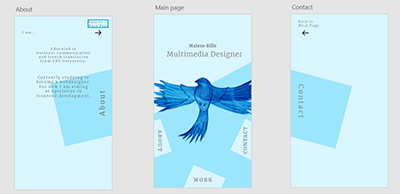

Web Design and Coding
#1 Portfolio
Target Group - Analysis
My Portfolio primarily addresses a future employer, who will use my Portfolio to get an overview of what I can.
When it comes to the design solution it can be argued to go with 'Mobile First' due to the following considerations;
In an application process, an employer will often receive many applications that he or she will probably have limited time to read through. One must therefore assume that an employer will probably see Portfolios / Applications throughout while on the move - and on the move we usually use a mobile device. The argument is strong but since I am in a learning process of coding I have chosen to start with coding a website and then make a solution for mobile devices later.
